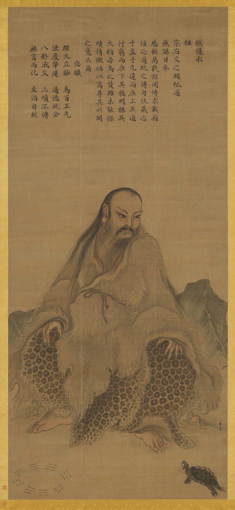
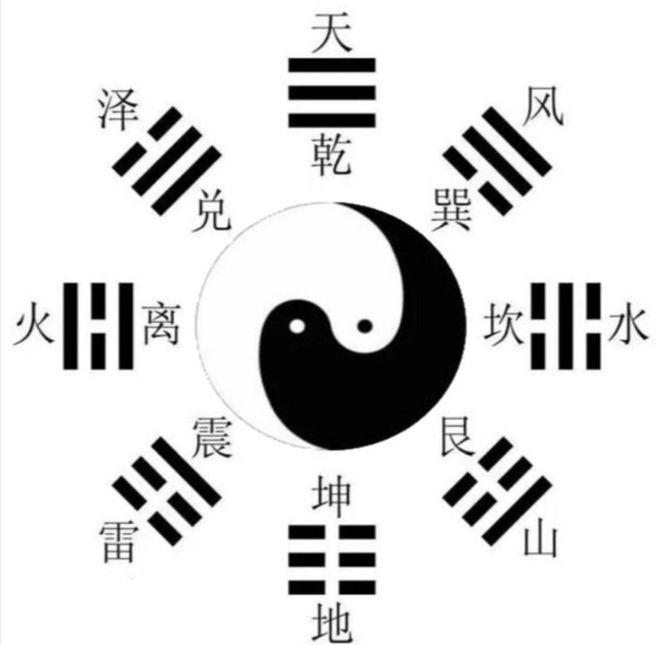

TCM Kolleg München
慕尼黑中医学院
Akupunktur und Chinesische Medizin lernen bei Zhongwen Zhang: Philosophie, Diagnostik und Behandlungstechniken der TCM.
Kurse und PreiseDas Kolleg setzt auf praxisnahe Lehre  , vom Grundwissen bis zur Anwendung in der Praxis, gelehrt von Zhongwen Zhang
, vom Grundwissen bis zur Anwendung in der Praxis, gelehrt von Zhongwen Zhang  .
.
Schulleiter und
Dozent
Zhongwen Zhang
- Studium der Traditionellen Chinesischen Medizin in Chengdu, VR China
- Heilpraktiker in Deutschland
Er lebt seit 1988 in Deutschland und praktiziert hier seit 1990 Chinesische Medizin. Aus über 35 Jahren Berufserfahrung und dem Studium der alten Klassiker hat er eigene Behandlungsmethoden entwickelt.
Warum er unterrichtet
Am Kolleg gibt Zhongwen Zhang sein Fachwissen und seine eigenen Methoden weiter. Sie lernen die TCM in Deutschland, aber aus erster Hand: bei jemandem, der sie in Chengdu studiert hat und seit 1990 hier praktiziert.

Was wir lehren
Im Spezialkurs lernen Sie die Chenwei-Akupunktur, in der zweijährigen Ausbildung die Grundlagen der TCM von der Diagnostik bis zur Kräuterheilkunde. Den theoretischen Rahmen bilden Yin und Yang. Zhongwen Zhang erklärt sie über Leibniz, der in den Zeichen des Fuxi sein Zahlensystem aus 0 und 1 wiedererkannte.
Eigene Lehrinhalte
- Chenwei-Akupunktur (谶纬针法): Zu den klassischen senkrechten Meridianen kommen waagerechte Meridiane, die Zhongwen Zhang entwickelt hat
- Qi und Meridiane, erklärt über die Verbindung von Fuxi und Leibniz
- Von taoistischer Philosophie inspirierte Arbeit mit den Faszien

Kursangebot
Für Ärztinnen und Ärzte, Heilpraktikerinnen und Heilpraktiker und ärztliches Assistenzpersonal. Nadeln setzen dürfen in Deutschland nur Ärzte und Heilpraktiker. In der Physiotherapie und zur Selbstbehandlung arbeiten Sie mit den Fingern.
- Das Kolleg stellt sich vor: Philosophie, Lehrinhalte und Dozent
- Der Vortrag findet regelmäßig statt
- Klassische senkrechte und neue waagerechte Meridiane
- 3 Wochenenden zu je 14 Stunden, im Abstand von 2 bis 3 Wochen
- Samstag 9:00 bis 12:30 und 13:30 bis 17:30 Uhr
- Sonntag 9:00 bis 13:00 und 13:30 bis 16:00 Uhr
- Alle drei Wochenenden 897 €, bei Einmalzahlung 747 €
- Vorkenntnisse sind nicht zwingend nötig
- Im Anschluss an den Spezialkurs
- Kultureller Hintergrund der TCM
- Ausführliche Diagnostik
- Meridianlehre und Akupunkturpunkte
- Kräuterheilkunde und die wichtigsten Rezepturen
Preise pro Person. Die nächsten Kurstermine nennen wir Ihnen gern per E-Mail an zentrum@tcm-muenchen.com oder unter 089 28 80 72 80.